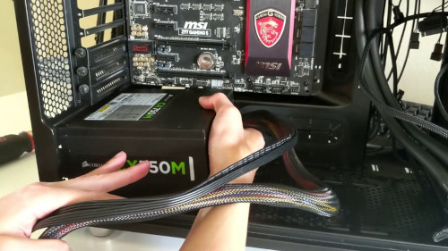
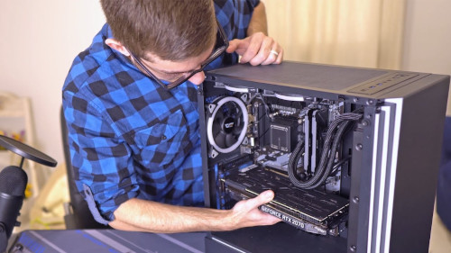
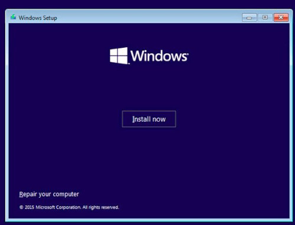

Step 1: Prepare your motherboard
The general rule is to fit as many components as you can before you screw them into the case. One important point to remember prior to starting work on your motherboard is to consult the instructions as many times as you can because your motherboard might have specific instructions or locations to mount your components. Keep in mind that some parts may require some force to plug them in, while other parts are simply put in their proper places. Be sure to follow the instructions below prior to placing your parts.
The first thing you’ll need to ensure is that you’ve assembled your PC on a level surface. Don’t put it on carpets as the combination between static electrical charge and the PC’s components is a risky combination and could result in damage to your components. It’s not likely. However, we recommend that you touch your case’s metal surface every now and then to keep you grounded and prevent the possibility of this occurring.
Instead, construct your system in a space with flooring made of laminate or hardwood, like an eating area or kitchen. We even did the extra step and stripped our shoes off. Get your motherboard out of the packaging and lay it out on an even surface. You can place it directly on the table. However, we prefer to place the motherboard on top of the box to prevent getting it scratched on our table. At this moment, you’re all set to start.
Step 2: Install the CPU
The simplest part of the whole construction is the first step: installing the AMD Ryzen CPU. The CPU socket on your motherboard is protected by a plastic piece that can be removed once opening the tray. The only thing you need to do is press downwards on the tray’s steel arm and then pull it out. When it’s out of the tray, you can lift it to expose the socket. The protecting plastic piece will slide away. Keep this piece of plastic in case you encounter any issues regarding your motherboard since you’ll need to insert it again prior to returning it to the manufacturer.
At this point, the socket for your CPU should be opened, allowing you to mount your CPU onto your motherboard. Your CPU will have tiny half-circle holes in its motherboard. The socket for CPUs was designed specifically to cover these holes, making it easier to align your CPU and then install it correctly. After you’ve decided how to position your CPU in its socket, make sure to do it slowly. Do not put pressure directly on the CPU. Instead, close the tray, and ensure that the arm’s metal is locked to its original position, which could require a little pressure.
Step 3: Install M.2 SSD(s)
M.2 SSDs are an additional procedure to follow. However, don’t forget to consult your manual to figure out the M.2 slots to make use of first. Your motherboard may be equipped with thermal guards that protect the M.2 slots. Therefore, you should remove the first. After you’ve removed any guards of the motherboard, you’re able to insert those M.2 SSDs. They will require a small amount of force to slide into their slots but don’t overdo it; they will slide into the slots effortlessly.
When the M.2 SSDs are in their slots, their opposite end should be pointed upwards at an angle diagonal. This is the time to select the appropriate screw (that typically comes in your motherboard), then move each M.2 SSD down, and then screw them into their appropriate slots. After that, you can remove the thermal guard and put it on the top of each M.2 SSD, and screw it back in place.
Step 4: Install the RAM
Another step is that you’ll need to refer to the manual for your motherboard. It will determine the order in which to put the RAM into. In the event that you’re using four slots but only two RAM sticks, it is recommended to ensure that the two sticks are separated in the first slot or third slot or in the second slot and fourth slot. Your motherboard manual will guide you in this regard. Separating your RAM in this manner can help you maximize the performance of the CPU.
The first step is to turn down the plastic clips on both sides of the slot you are planning to use. Inserting the RAM requires greater force, but be sure to start with a small amount and increase the pressure slowly. If you hear a click, the RAM is now inside its place. The plastic clips move upwards, grabbing your RAM. If you find that your clips aren’t flipping and down, your RAM might not be properly seated.
Step 5: Prepare your case to receive your motherboard
It’s about time to put your motherboard in your box; however, first, you’ll have to install some standoff screws to install your motherboard prior to fixing it. The standoffs are included with your motherboard. Once you’ve found them, you can begin installing them in your case. There should be around 12 holes that the standoffs can fit into. Consult the instruction manual of your case in case you’re struggling to locate the holes. After you’ve screwed the standoffs into the case, you’re now ready to connect your motherboard.
Step 6: Insert your motherboard into the case
The standoffs make it simple to insert your motherboard into your box. However, you shouldn’t begin installing it right away. There should be an area at the back of your case for your motherboard’s input and output ports to be able to fit in. It’s likely to be a rectangle, and your motherboard will need to fit comfortably in the area so that you are able to access all ports. When everything is fitted, then you can begin screwing your motherboard into standoffs using the appropriate screws. Remember that you don’t want to screw anything in too tight. Turn your screwdriver until it’s fastened, and you’re free to move on.
Step 7: Connect the power source (PSU)
The process of installing the power supply in your case is usually simple. It is recommended to consult the manual of your particular case for the procedure. However, it’s simple. We first took the bracket that was attached to our case and snagged it to the side of the power source. You’ll notice that the power supply also has fans, which are utilized to move air around. If you’re thinking of placing your gaming computer on a wood deck or floor, it’s fine to point this fan downwards. If you’re placing your gaming computer on a carpeted floor, you’ll want to direct the fan upwards.
After you’ve determined which direction your PSU should be placed and then screw it onto the bracket for mounting and then put it in your case, and put the bracket’s screws in place. Based on the amount of room you have to fit your PSU, it may be a good idea to put off screwing it into the case until you’ve connected all of its power cables.
Step 8: Connect your SATA hard drives or SSDs
Once the power supply is connected, you can begin connecting your SATA drive or SSDs. Your case will contain a particular bay that is specifically designed for these types of drives. Find the area, and then look for two clasps made of metal located on the right and left sides on each side of your bay. Make sure to squeeze these clasps before you remove the bay. This is the place where you’ll be allowed to insert your SATA drive and make sure it is in place inside your case.
Once you’ve done this, then you’ll need to reinstall the drive into the slot and plug in the SATA as well as a PSU cable to your drive. Locate the SATA slot of your motherboard, and connect the other end of the cable that is appropriate to it. Then, plug the other end of the PSU cable into the power source. The drive is now in place; however, you’ll need to format it when your computer is up and running.
Step 9: Plug in your case and power cables to the motherboard
Now, you’re ready to begin plugging cables into your motherboard. This is a process that requires patience because the cables, in your case, are small and may be difficult to find. It is recommended to refer to both your motherboard and your case instructions during this process. Certain motherboards, such as the Arouse Ultra, come with an interface that you could connect the case cables to before connecting them to the motherboard. This makes the process simpler.
The cables, in your case, make it possible for you to utilize the different ports located on the back of your PC, along with the power button. Obviously, nothing’s going to occur when you press the button if there isn’t a connection for your PSU to the motherboard. It’s important to connect the ATX 24-pin and the EPS12V cables into the appropriate places on the motherboard as well as the PSU. Then, you’ll plug in all your power cables into your PSU, including the fan, SATA drives as well as your system for cooling.
Step 10: Install your cooling system
Installing your cooling system may be a bit nerve-wracking, especially when it comes to applying the thermal paste. However, it’s actually much easier than you think. The first thing to do is to attach the bracket for your system to the motherboard. You’ll require access to the rear part of the tray because you’ll be screwing a part of it onto the side of the tray. This will provide you with the locations where you’ll have to put the cooler’s pump on the motherboard and CPU. Before you can do this, however, you must follow additional steps.
Cooling systems for CPUs that are liquid-based have a radiator that is equipped with fans. These are what you’ll be able to attach to the case. Naturally, you’ll need to decide the best location to place it. We suggest installing it in the top grill of your case because it will allow for greater airflow. However, certain cases don’t come with a grill on top, and you’ll have to put it on the inside or back of your case. Once you’ve determined the place you’ll be going using; you’ll have to screw in the radiator to the grill. After that then, you’re now ready to connect the pump.
In the beginning, you’ll need first apply some kind of thermal glue. Certain coolers have thermal paste already applied. In that scenario, then your cooler’s paste is probably adequate for the task, and you’ll be in a position to skip the next step. It is also possible to get rid of the cooler’s paste using dry cloths in the event that you bought a thermal paste you’d prefer to go with. It’s best to place the pea-sized amount of thermal paste in the middle of your CPU. In this process, you must make sure to use a smaller size than a larger one. Once the paste is applied, push the cooler into its proper position over the CPU and the thermal paste. If you feel like you’ve used too much of the thermal paste, do not worry about it: It’s easy to clean the CPU off using a dry cloth, then rub alcohol before trying to do it again.
Once the pump has been set up after installation, you’ll need to ensure that all of the cables of your cooling system are properly connected to the appropriate locations. The particular cooler we had to use required us to plug in a micro-USB cable into the pump and then the other to our motherboard.
Step 11: Start cable management
Before moving on to the next step of making your PC, it is advisable to organize your cables to tidy up. This will create space for air circulation and also allow access to your PC components should you decide to upgrade in the future. Many cases come with Velcro bands or zip ties. I’m always carrying an extra bag of Velcro’s at hand in the cases. The case we chose, Fractal’s Massify C, has incredible space for managing cables that are outfitted with a set of Velcro straps. The area is located at the rear part of the motherboard tray. We were able to slip every cable in this area and secure it to the tray in a neat manner.
The zip ties that we used were to connect our CPU cooling system’s wires, which were small and abundant. This made it easy for us to position them into the holes of the case in order to get to our desired position. Make sure to not tighten the zip ties too much since doing this could cause damage to the cables.
Step 12: Install your graphics card
Now, let’s talk about the feature you’re likely most excited about. The graphics card is simple to set up. In the beginning, you’ll need to take out the appropriate amount of slot expansion slots from the rear of your case to allow for the proper size of the graphics card. It will differ based on the GPU you choose and the model, but two is typically the best number to go with. MSI’s GeForce GTX 2080 Ti can take up to two.
After you have removed and unscrewed the screws, determine the PCIe Express slot you’ll need to put your card in first, and then turn the plastic notch located at the edge of the slot down to allow for the installation. From here, all you have to do is align your graphics card with that PCIe Express slot and then push it down until that notch turns up and clicks. It’s not that difficult. Any force to insert it; however, you’ll need to push the graphics card into the slot until you hear the click. When you hear that click, you’ve got it, you can put your brackets that mount your graphics card into the case with the screws that are in the expansion slot as well as holes.
In this stage, you’ll need to connect your graphics card to the power source to supply it with the power it needs. (Low-end graphics cards typically don’t require additional power, and if that’s the case for the graphics card you’re using, you’re advised to bypass this part.) Use the cables that come in your power supply, and connect one end of the cable to the graphics card. Then connect the other end to the PSU. It’s fine if certain cables don’t get used. Just ensure that every connection on the graphic card is connected to a portion of the cable connected.
Step 13: Install your OS
After you’ve gotten a neat PC that has all your cables taken care of, attach the HDMI cable to your computer and connect another end to an LCD monitor. Connect the power cable to the PSU while plugging the second into an outlet. After that, you should flip the switch that powers to the side of the computer towards the “On” position. Hit to turn on the power on the computer, and if it comes on, you’re nearly ready to start.
In this case, you’ll require a second PC and a USB drive with at least 8GB. We recommend that you use the SanDisk Extreme Pro. The next step is to go to the website of Microsoft to follow the instructions that are provided. This will allow you to build an installation disk on your USB drive that you can connect to your computer before starting it up.
When you start your computer, it will immediately begin its Windows 10 installation process. Follow the steps below and then wait for it to install. After that and you’re in good shape, but you’ll have to purchase an appropriate registration to install Windows 10 from Microsoft. If you install this from your new computer, it will be activated instantly. Once you’ve set everything up and you’re ready to go, with the exception of any installation requirements for an optical drive in the event that you choose to buy one.
